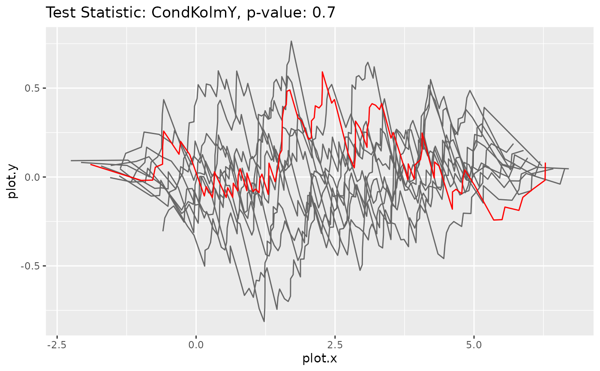

This class implements functions to calculate the test statistic for the original data as well as the statistics for bootstrap samples. It also offers the possibility to compute the corresponding bootstrap p-value.
Methods
Method new()
Initialize an instance of class GOFTest.
Usage
GOFTest$new(
data,
model_fitted,
test_stat,
nboot,
resample = resample_param,
loglik = loglik_xy
)Arguments
datadata.frame()containing the datamodel_fittedobject of class ParamRegrModel with fitted parameters
test_statobject of class TestStatistic
nbootnumber of bootstrap iterations
resamplefunction(data, model)used to resample data in bootstrap iterations, defaults toresample_param()loglikfunction(data, model, params)negative log-likelihood function used to fit model to resampled data in bootstrap iterations, defaults tologlik_xy()
Method get_stat_orig()
Calculates the test statistic for the original data and model.
Returns
object of class TestStatistic
Method get_stats_boot()
Calculates the test statistics for the resampled data and corresponding models.
Returns
vector of length nboot containing objects of class
TestStatistic
Method plot_procs()
Plots the processes underlying the bootstrap test statistics (gray) and the original test statistic (red)
Arguments
titletext to be displayed as title of the plot; defaults to "Test statistic: xxx, p-value: xxx"
subtitletext to be displayed as subtitle of the plot; default is no subtitle
color_bootcolor used to plot bootstrap test statistics; default is "red"
color_origcolor used to plot original test statistic; default is "gray40"
x_lablabel to use for the x-axis; default is "plot.x"
y_lablabel to use for the y-axis; default is "plot.y"
Examples
# Create an example dataset
n <- 100
x <- cbind(runif(n), rbinom(n, 1, 0.5))
model <- NormalGLM$new()
y <- model$sample_yx(x, params=list(beta=c(2,3), sd=1))
data <- dplyr::tibble(x = x, y = y)
# Fit the correct model
model$fit(data, params_init=list(beta=c(1,1), sd=3), inplace = TRUE)
# Calculate the bootstrap p-value and plot the corresponding processes
goftest <- GOFTest$new(data, model, test_stat = CondKolmY$new(), nboot = 10)
goftest$get_pvalue()
#> [1] 0.6
goftest$plot_procs()

# Fit a wrong model
model2 <- NormalGLM$new(linkinv = function(u) {u+10})
model2$fit(data, params_init=list(beta=c(1,1), sd=3), inplace = TRUE)
# Calculate the bootstrap p-value and plot the corresponding processes
goftest2 <- GOFTest$new(data, model2, test_stat = CondKolmY$new(), nboot = 10)
goftest2$get_pvalue()
#> [1] 0
goftest2$plot_procs()